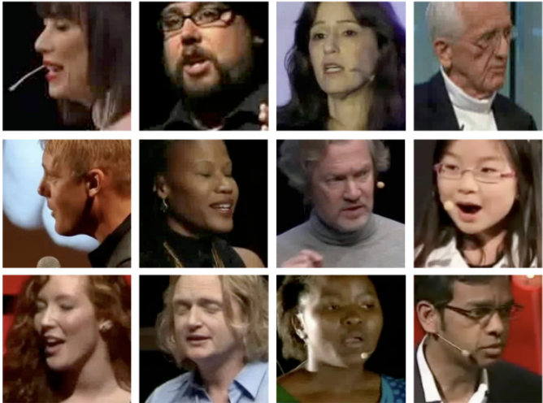
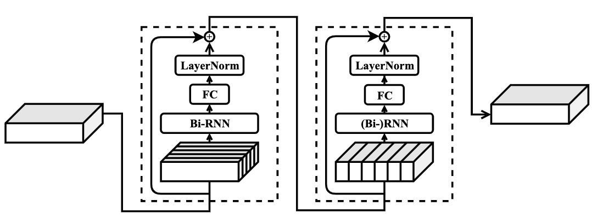
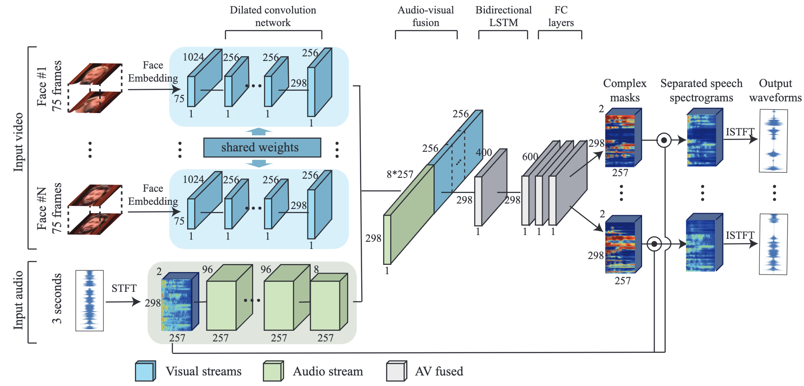
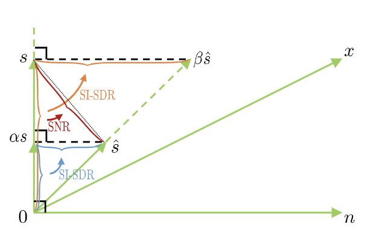
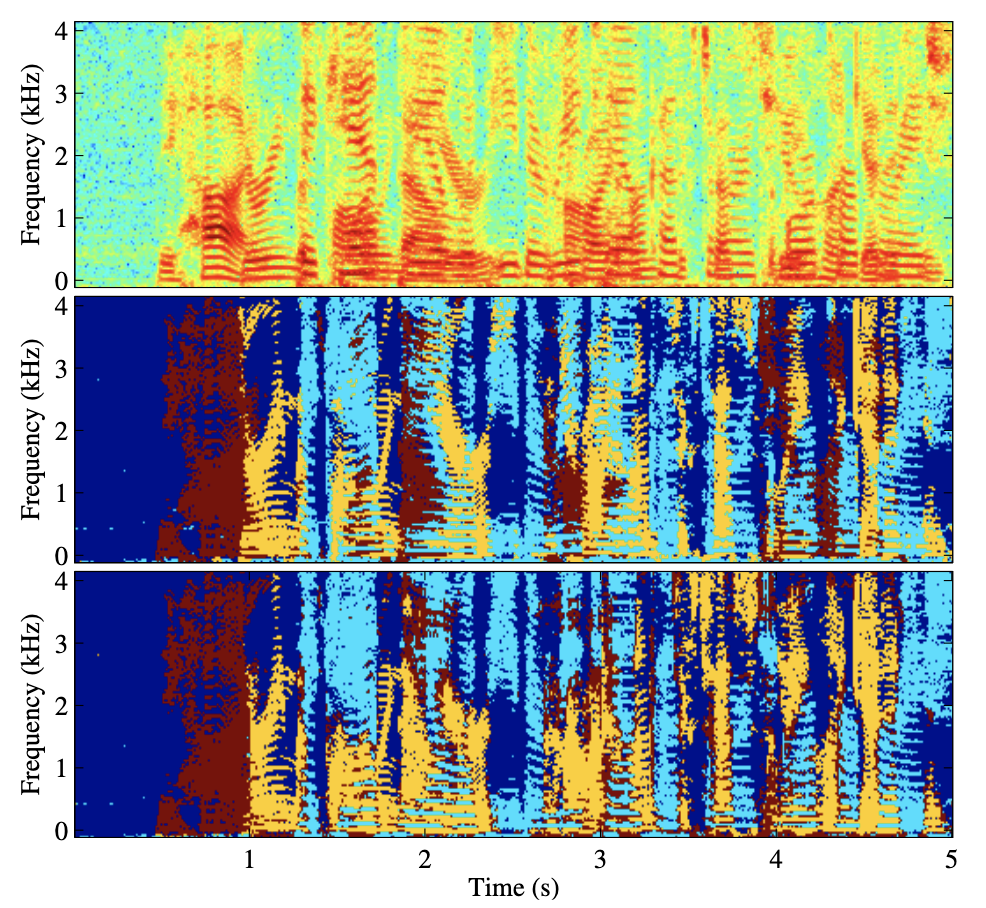
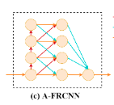

|
My name is Kai Li (Chinese name: 李凯). I'm is a first-year master student at Department of Computer Science and Technology, Tsinghua University, supervised by Prof. Xiaolin Hu. I am also a member of TSAIL Group directed by Prof. Bo Zhang and Prof. Jun Zhu. My research interests include super resolution, speech separation and cross-model speech separation. I was an intern at Tencent AI Lab, mainly doing research on causal speech separation, supervised by Yi Luo . I got my bachelor's degree from Department of Computer Technology and Application, the Qinghai University, supervised by Prof. Jianqiang Huang and Prof. Chunmei Li in 2020. Notes
|
|  |
Open source audio-visual dataset processing script.
[
Github
] MoreFollowing are the steps to generate training and testing data. There are several parameters to change in order to match different purpose.
|
 |
Dual-path RNN
[
Github
] [
知乎:
DPRNN阅读笔记] MoreEfficient long sequence modeling for time-domain single-channel speech separation implemented by Pytorch.
|
|  |
Audio-visual speech separation method :-)
[
Github
] [
知乎:
LLCP阅读笔记] MoreThe project is an audiovisual model reproduced by the contents of the paper Looking to Listen at the Cocktail Party: A Speaker-Independent Audio-Visual Model for Speech Separation.
|
 |
Calculatie Audio‘s SNR and SDR.
[
GitHub
] 
|
|
A must-read paper and tutorial list for speech separation based on neural networks
[
Github
] MoreNone
|

|
Conv-TasNet: Surpassing Ideal Time-Frequency Magnitude Masking for Speech Separation Pytorch's Implement
[
GitHub ] [
知乎:
Conv-TasNet阅读笔记] 
|
|

|
According to funcwj's uPIT, the training code supporting multi-gpu is written, and the Dataloader is reconstructed.
[
Github
] [
知乎:
uPIT阅读笔记] MoreNone
|
 |
Deep clustering in the field of speech separation implemented by pytorch
[
GitHub
] [
知乎:
DPCL阅读笔记] 
|
|  |
Speech Separation Using an Asynchronous Fully Recurrent Convolutional Neural Network
[
GitHub
] 
|
News
- [05/2022] 1 paper to appear in Interpseech 2022 !
- [05/2022] 1 paper to submit in Nature Machine Intelligence.
- [03/2022] 1 paper to submit in IEEE Transactions on Industrial Informatics.
- [03/2022] 2 paper to submit in Interspeech 2022.
- [10/2021] 1 paper to appear in NeurIPS 2021 !
- [05/2021] We won the 5% of the Global College Student Supercomputer Challenge (ASC20-21) !
- [01/2021] We won the global first prize of the 2019 Global College Student Supercomputer Challenge (ASC20-21) !
- [06/2020] Outstanding Bachelor Thesis Award, Qinghai University of Computer Science and Technology !
- [06/2020] Outstanding Graduates, Qinghai University of Computer Science and Technology !
- [04/2020] 1 paper to appear in IET image processing.
- [01/2020] I am an algorithm intern at Moyin Technology for speech dirazation and voiceprint recognition.
- [11/2019] 1 paper to appear in ISPA2019.
- [11/2019] We won the first prize of the first "Ganqingning" Innovation and Entrepreneurship Competition !
- [11/2019] I won the National Scholarship, Ministry of Education, China !
- [05/2019] We won the second prize in the Natural Academic Paper category of the National College Student Challenge Cup Qinghai Provincial Trial !
- [05/2019] We won the first prize in the Qinghai Division of the 6th National Youth Science Innovation Experiment and Work Competition !
- [05/2019] 1 papers to appear in ICDIP2019.
- [04/2019] I won the second prize at the provincial level in the Blue Bridge Cup Java Group A!
- [03/2019] We won the global second prize of the 2019 Global College Student Supercomputer Challenge (ASC19) !
- [12/2018] We won the first prize of natural academic paper in the first "Principals Cup" Innovation and Entrepreneurship Competition in Qinghai Province !
▶ Click for More
Publications


(* equal contribution, # corresponding author)
© Kai Li | Last updated: June 16st, 2022 | Theme by Xintao Wang